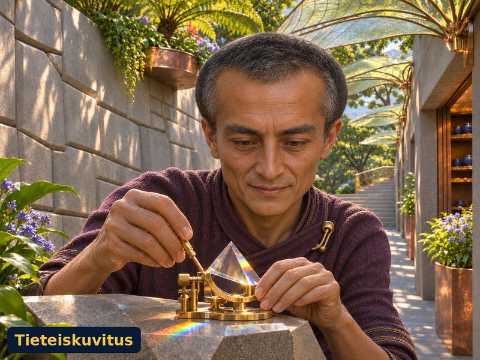
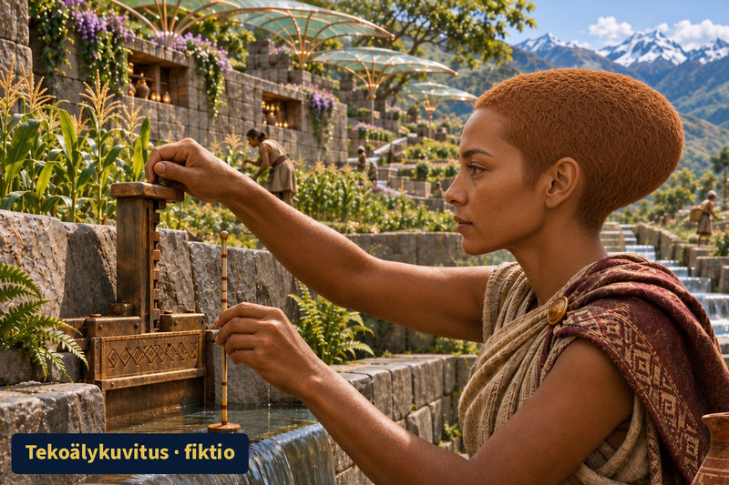

Kivikaupungin kasvot
Sivu perustuu Janin ajatukseen kehittyneestä, ihmistä edeltävästä kuvitteellisesta yhteiskunnasta. Lähdekuvien kallot kuuluvat ihmisille, joiden pää muotoiltiin lapsena. Kivikaupunki ja sen asukkaat ovat keksittyjä.
Jokaisessa parissa on ensin Janin valokuva ja sen vieressä tai alla tieteiskuvitus, joka on tehty tekoälyn avulla lähdekuvan muodosta. Numero yhdistää lähdekuvan ja kuvituksen. Lähdekuvista puuttuu usein alaleuka, joten leuka ja suu ovat kuvittajan ratkaisuja. Hahmojen ilmeet, ihonsävy, hiukset ja arki kuuluvat kivikaupunkiin. Kuvituksesta ei voi päätellä vainajan kasvonpiirteitä, lajia eikä ulkonäköä.
Mitä kallot kertovat?Faktasivu: kuvat 01–11, näyttelytekstit ja julkaistu tutkimus.
01 · Optikko säätää prismaa



Otsan leveys ja silmäkuoppien väli ohjasivat kasvojen yläosan muotoa. Leuka ja suu ovat kuvittajan valintoja.
Alkuperäinen kuva 01 ja havainnot · Parit 04 ja 10 saattavat esittää samaa kohdetta kuin tämä pari.
02 · Kivikuorma kulkee kujalla


Hahmon otsa nousee melko pystyyn. Mallina oli videokoosteen ylärivin vaalea kallo.
03 · Kivenhakkaaja tarkistaa sauman


Oikealle kääntyvässä sivukuvassa tärkein muoto on linja otsalta taakse kaartuvaan takaraivoon.
04 · Puutarhuri tutkii siemenkotaa


Yläkasvoissa toistuu kuvan 01 pyöreä muoto. Kädet auttavat arvioimaan lähdekuvan mittasuhteita.
Alkuperäinen kuva 04 ja havainnot · Parit 01 ja 10 saattavat esittää samaa kohdetta kuin tämä pari.
05 · Vesimestari vaaitsee kanavaa


Lähtökohtana oli etualan kallon vasemmalle suuntautuva profiili. Takaraivon kaari jatkuu korvan taakse.
06 · Kutojat tutkivat kangasta


Vasemmanpuoleisen kallon laki viettää taakse. Oikeanpuoleisen ääriviiva nousee pystympään.
07 · Kohtaaminen maissitorilla


Kolme kuvakulmaa antoivat aiheen kolmelle erilaiselle kasvojen ääriviivalle. Keskimmäinen torihahmo on kuviteltu aikuiseksi.
08 · Lasikatos kulkee portista


Vasemmanpuoleisen kallon pystympi muoto ja oikeanpuoleisen loivempi otsalinja erottuvat parhaiten vertaamalla sivuja.
09 · Vesipyörän sävel


Vasemman ja oikean pään erilainen kaltevuus antaa kasvot kahdelle vesipyörän ääreen kumartuvalle asukkaalle.
10 · Huilunsoittaja kivikujalla


Sivukuvassa näkyvät pyöreä laki ja silmäkuopan reuna. Soittajan huulten ja leuan muoto on kuviteltu.
Alkuperäinen kuva 10 ja havainnot · Parit 01 ja 04 saattavat esittää samaa kohdetta kuin tämä pari.
11 · Korinvaihto terassikaupungissa


Vitriinin monista ääriviivoista syntyi kaupunkinäkymä. Etualan asukkaat on suunniteltu tätä kohtausta varten.
Kairon kivikasvot ja Perun kallot
Amarnan päät ovat veistoksia, ja museot kuvaavat pitkänomaista päälakea Amarnan taiteen tyylipiirteeksi (Global Egyptian Museum, JE 44869 · Berliinin egyptiläinen museo, ÄM 14145). Perun kallot ovat ihmisten kalloja, jotka muotoiltiin lapsena (tutkimustausta). Yhteys näiden välillä on vain kuvallinen.
Parit 12 ja 13 rinnastavat Janin Kairon egyptiläisessä museossa 15.2.2024 kuvaamat kivipäät Perun kallokuviin ja kivikaupungin hahmoihin. Kairon lähdekuvat ovat rajauksia Janin videon pysäytyskuvista (museokierros kohdasta 51.31). Sivullisten kasvot on sumennettu.
Esinenumerot eivät erotu Janin ruuduista, joten museon esinekortti on vertailukohde eikä tunnistus. Kairon egyptiläisen museon kokoelmassa on Tell el-Amarnasta löydetty kvartsiittipää JE 44869, joka on Global Egyptian Museumin mukaan todennäköisesti Meritaten, Akhenatenin vanhin tytär. Saksalainen Deutsche Orient-Gesellschaft kaivoi sen vuonna 1912 kuvanveistäjä Thutmosen työpajasta (Global Egyptian Museum). Samantyyppinen Amarnan prinsessan kivikasvo on myös New Yorkissa (The Met, Head of a princess from a group statue). Kairon museon oma esinekortti: Head of Princess, daughter of Akhenaten.
12 · Kutoja korjaa varjokangasta


Vertailuun käytetty Perun kuva on kuva 03 (pitkä kallo käsissä).
13 · Kanavan mittaaja säätää sulkua



Vertailuun käytetty Perun kuva on kuva 09, josta valittiin oikeanpuoleinen kallo.
Sama esillepano Perun videolla

Yhtymäkohta auttaa tunnistamaan esillepanon. Tarkka löytöpaikka ja vitriinin esineiden henkilöllisyys jäävät avoimiksi. Kuva 09 faktasivulla.
Toinen esimerkki Amarnasta: Berliinin perhereliefi

Berliinin perhereliefi näyttää, miten kuningasperheen sivuprofiilit esitettiin myös tasaiselle kivipinnalle kaiverrettuina. Tyttärien päälaki pitenee taakse. Museon mukaan piirre on puhdas tyylikeino eikä merkki perinnöllisestä tai tarkoituksella aiheutetusta muodosta (museon kuvaus reliefistä, englanniksi).
Kivireitin vanhat spekulaatiokuvat
SNämä kolme kuvaa olivat aiemmin kivireitin sivulla ajatuksena toisenlaisesta sivilisaatiosta. Ne ovat tieteiskuvitusta eivätkä kuvaa tutkittua historiaa. Tutkimuksen mukaiset kuvaukset ovat kivireitin sivulla.


Hahmojen ilmeet, ihonsävy, hiukset ja arki kuuluvat kuviteltuun kivikaupunkiin. Osa valokuvista näyttää saman kohteen eri suunnista.